Unless I get introspective, then things get troublesome.
Despite that, there's always a feeling of accomplishment at the end of these escapades.
Week 3
The Smaller Picture by Kevan Davis is a collective art piece that allows users to create an image using either black or white dots. A subject is given and the participants are randomly assigned a square to color.
Unlike the projects mentioned by Jeff Howe, this work is quick and simple with no monetary gain involved. Because the available pictures cycle one after another, users can be as methodical or mindless about each of them as much as they want. In hindsight, the addition of a Mechanical Turk-esque monetary system might give people a larger incentive to participate. Something absurd like 25 cents per square can make people (or farming bots) spend hours upon hours doing these menial tasks for the easy money. Furthermore, the heavy traffic that could occur from such a prospect could force the site to shut down very quickly. With issues like those, it is probably for the best that The Smaller Picture is but a cute little distraction.
Lauren McCarthy's workflow of listening to audience feedback in order to plan her actions reminds me of the Twitch Plays Pokemon (2014) series, where a large number of users play Pokemon games simultaneously by buffering each other's commands. The key difference between these two works is the human aspect of it. McCarthy's project elicits more immediate empathy due to the audience being able to watch two humans awkwardly interact between one another; the aspect of voyeurism, coupled with the author's post-date thoughts of each session, gives the project an uncomfortable edge. The Pokemon project meanwhile, seems less empathetic due to there not being a central human figure in the work, focusing instead on anonymous users trying to beat an RPG. Despite this, it is still a work that elicits awe and nostalgia due to Pokemon playing a significant part in some people's childhoods and proving that beating a game with the chaotic inputs of thousands of people is actually doable.
Lauren McCarthy's work is also reminiscent of modern streamer culture. The artist mentioning about relying on the audience's participation to get through dates is similar to cases of streamers doing public stunts in order to obtain cash and incite more participation in the audience. Whenever McCarthy talks about freedom and control over her project in her blog, I can't help but think about the opposite sometimes: that the creator has to constantly please the crowd in order to get by, or risk financial loss.
Week 6
FLOWER AND MONITOR PALS
Question:
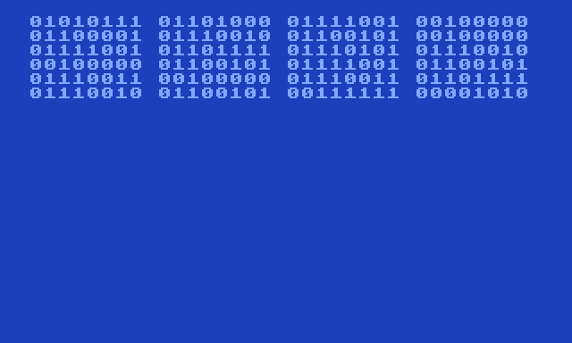
Answer:
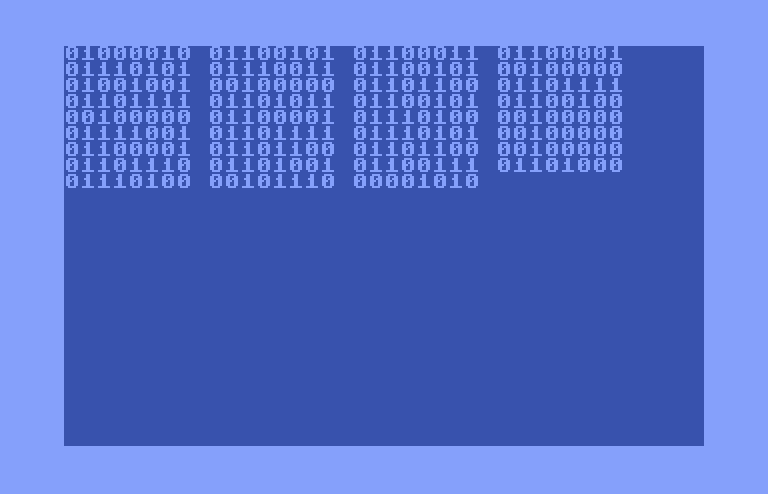
Question:
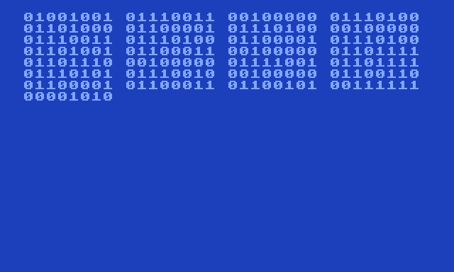
Answer:
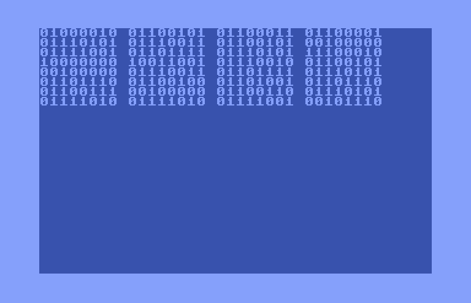
Question:
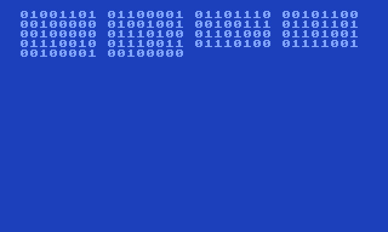
Answer:
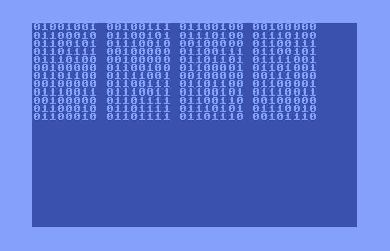
Question:
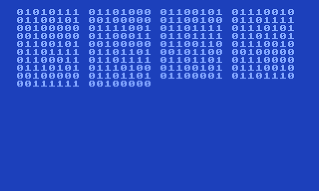
Answer:
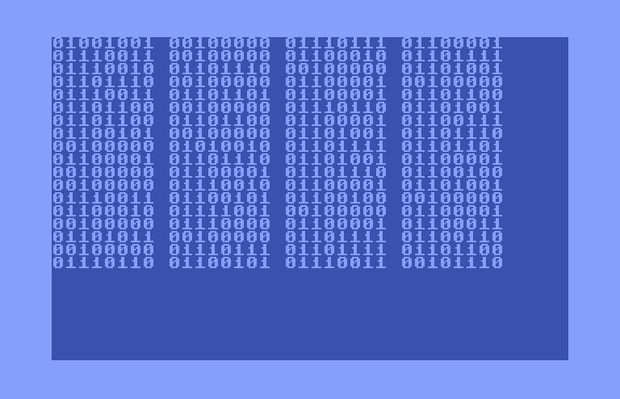
The articles of Allison Parrish have inspired me to create these question/answer conversations between a digital flower and a digital monitor.
The work was created with the theming of “nonsense”, a word often used in the readings. Because the realm of “nonsense” was often a frontier traversed by machines, I wanted to make an artwork that felt “machine-processed”. To this end, I chose two subjects - a flower and a monitor - and had them converse with one another. The subjects were chosen due to possessing both living and inanimate qualities: they can operate/do tasks on their own, but are incapable of understanding humans on a mental level. However, because the subjects are both digital in this context - quite literally, thanks to TEXTp turning them into ASCII-esque amalgamations - they can communicate with each other using binary code; a code often associated with computers. This binary code, considered as “nonsense” by casual onlookers, is now a secret language between the two digital creatures (although a translation of the text can be found here).
The conversations were created by typing responses to punchlines.ai, a software used for telling jokes. I figured lame, nonsensical jokes would give the work a lighthearted tone. The questions and responses were then turned into binary using RapidTables. Finally, I used THE DEATH GENERATOR to post the binary code onto oldschool computer interfaces, in order to emphasize the fact that the work takes place in a digital landscape.
 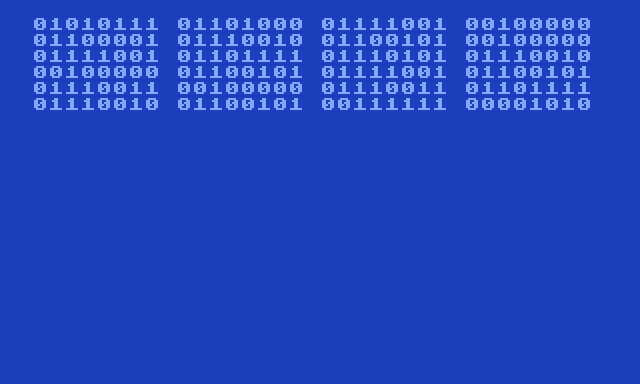
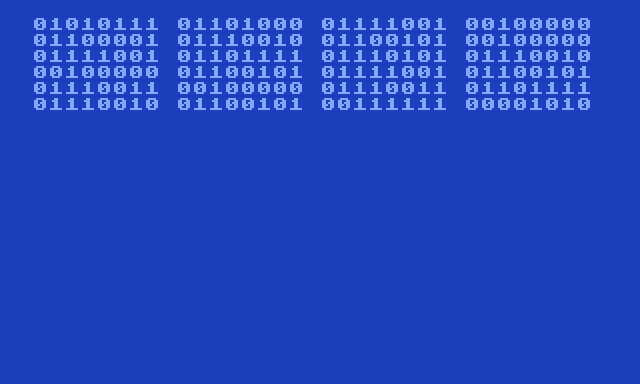
 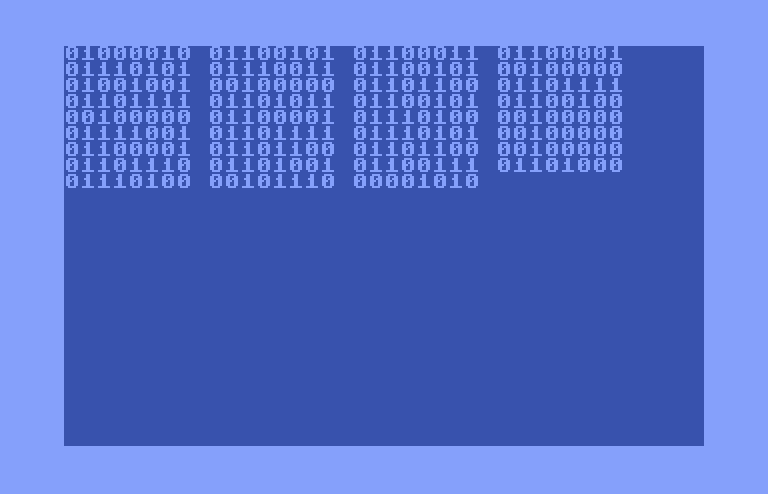
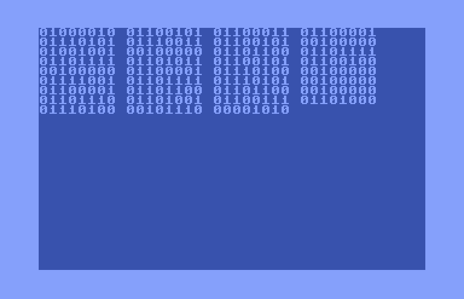